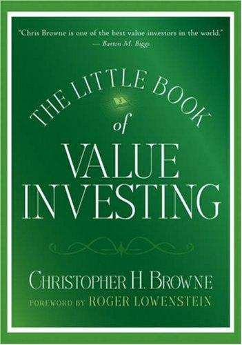

克里斯托弗·H·布朗（Christopher H. Browne）1946年出生，1969年从宾夕法尼亚大学毕业后加入Tweedy, Browne。这家公司由福雷斯特·伯温·“比尔”·特威迪（Forest Berwind "Bill" Tweedy）于1920年在纽约创立，早期为交易清淡的股票撮合买卖。本杰明·格雷厄姆的办公室一度与它同楼，格雷厄姆-纽曼公司也长期是其重要客户；这段业务往来使公司很早便熟悉以资产价值为依据、在冷门证券中寻找折价的做法。布朗的父亲霍华德·布朗（Howard Browne）1945年成为合伙人，克里斯托弗后来也执掌公司多年。2003年，他以Hollinger International股东身份质疑控股股东康拉德·布莱克（Conrad Black）取得的管理费和相关交易；他还是Tweedy, Browne研究报告《投资中什么有效》（What Has Worked in Investing）的主要执笔人之一。这份汇总低市净率、低市盈率等历史研究的白皮书1992年首次发布，修订版至今仍由公司公开提供。布朗于2009年12月13日去世，享年63岁；生前曾向宾夕法尼亚大学捐赠2500万美元，并担任校董事。
《价值投资者的头号法则》由约翰·威利父子出版社（John Wiley & Sons）于2006年出版，是“小书大利”（Little Books, Big Profits）系列的第6本，序言由后来写出《巴菲特传》与《天才的失败》的记者罗杰·洛文斯坦（Roger Lowenstein）撰写。全书围绕格雷厄姆式的两个核心——内在价值与安全边际——展开：布朗建议投资者最多只付出评估价值的三分之二左右去买入一只股票，为判断失误留出缓冲。他提出一套“三条腿的凳子”式估值框架，即市净率、市盈率与“评估法”（假设整家公司被私人买家整体收购应值多少钱）三者互相印证，并把股息率当作股价被低估的辅助信号，提醒读者应像挑打折的牛排一样买入被冷落的好公司，而不是追捧被热炒的“故事股”。他还提到，价值投资的超额收益历经数十年检验依然存在，但愿意真正践行的投资者始终只占5%到10%，原因不在方法本身，而在于逆向操作要承受的职业与声誉风险远大于随大流。书中专辟章节讨论国际价值投资：Tweedy, Browne自己的研究发现，低估值溢价在他们考察过的每一个市场都成立，并非美国独有的现象，全球逾半数上市公司的交易地点也在美国之外；但布朗同时提醒普通投资者，缺乏语言和当地信息优势时，与其挑选单只海外个股，不如通过带价值倾向的国际指数基金间接参与。
本书封底印着投资人巴顿·比格斯（Barton M. Biggs，Traxis Partners创始人、《对冲基金风云录》作者）的推荐语："Chris Browne is one of the best value investors in the world. What he has to say is always worth paying attention to."（克里斯·布朗是世界上最优秀的价值投资者之一，他说的话永远值得倾听。）哥伦比亚商学院的布鲁斯·格林沃尔德（Bruce Greenwald）在封面上的评价则是："Tweedy, Browne has been one of the great leaders of wealth creation. Chris Browne is an outstanding practitioner."（Tweedy, Browne是财富创造领域的伟大引领者之一，克里斯·布朗则是其中杰出的实践者。）布朗生前是格林沃尔德在哥伦比亚商学院“价值投资研讨课”上的常客讲师，并从2002年起担任该校海尔布伦价值投资中心顾问委员会创始成员。此书在中国有过多个译本：2008年广东经济出版社版译作《投资的头号法则》，2019年四川人民出版社再版时改译为《价值投资者的头号法则》，两版译者均为刘寅龙。
与他和同事合著、偏重历史数据的《投资中什么有效》相比，这本两百页左右的小书是写给普通投资者的执行手册。它不应被读成“低估值必然获利”的保证：市净率会被无效资产扭曲，低市盈率可能来自盈利周期见顶，私人买家的估值也只是参考情景。布朗真正要求的是让三种估值互相校验，再以分散持仓和低买入价处理判断可能出错的事实。作者所在机构确与格雷厄姆传统有直接业务渊源，但这层谱系不能替代证据；书中最可复用的部分，是把“安全边际”拆成可以检查的价格、资产、盈利和负债条件。